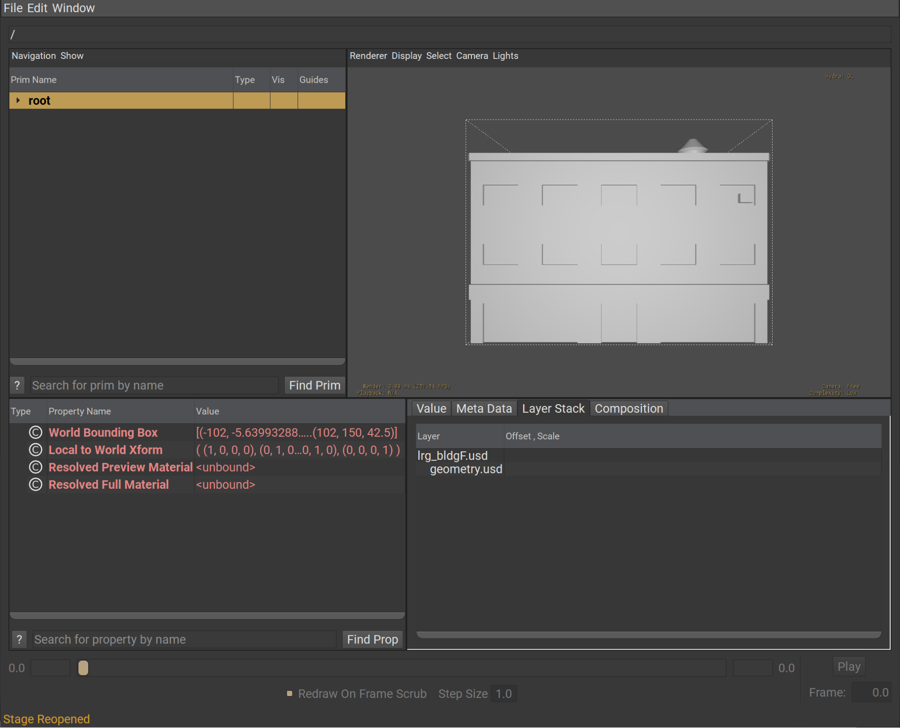
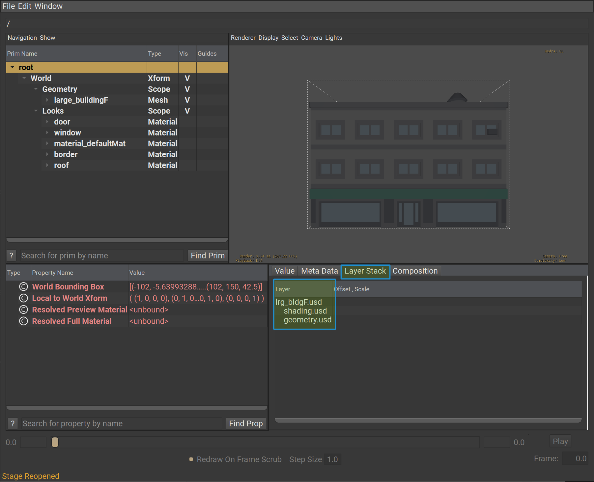
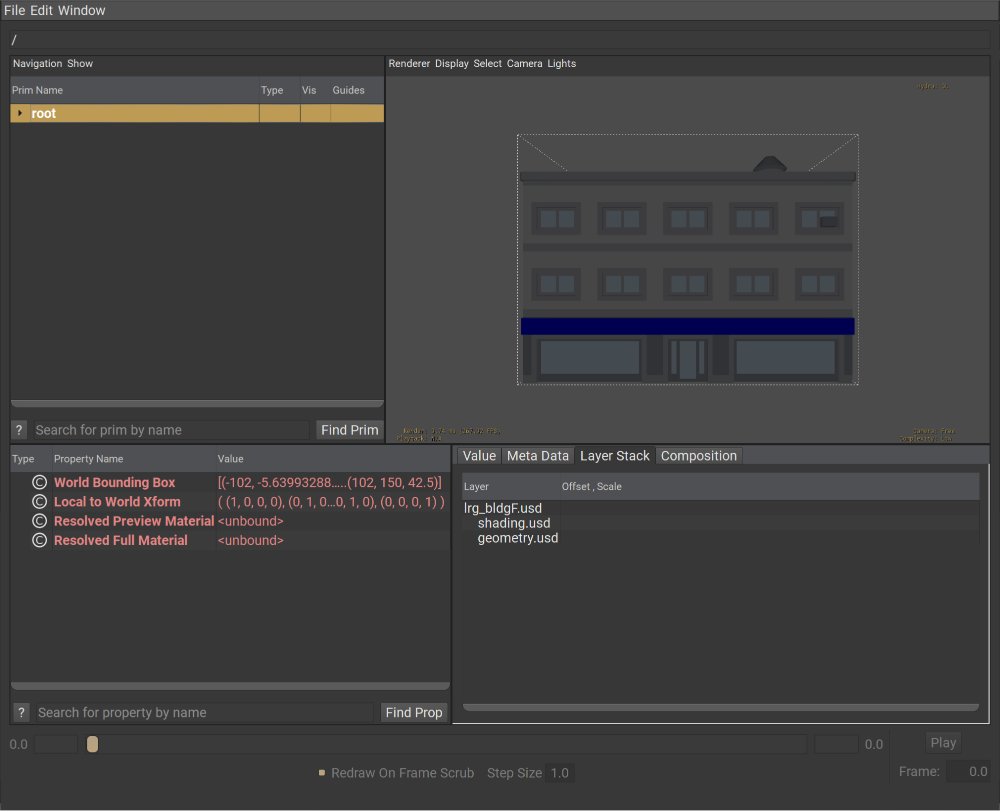

Exercise: Adding User Workstreams#
In this exercise, we’ll organize our asset structure into layers, specifically geometry.usd and shading.usd, to manage our workstreams effectively. We’ve already taken the first step by moving the geometry to a geometry.usd layer. You can think of this as if a modeler had exported the initial model from their digital content creation tool (DCC) into the geometry.usd layer.
Next, we’ll create a script to simulate the work of a surfacing artist. This script will mimic a sparse export of only material and binding information from a surfacing DCC. This data will be authored to a shading.usd layer, which we will then add as a sublayer to our asset.
Let’s look at
lrg_bldgF.usd. In the Visual Studio Code terminal, run the following command to open the layer in usdview:
Windows:
.\scripts\usdview.bat .\asset_structure\exercise_04\lrg_bldgF.usd
Linux:
./scripts/usdview.sh ./asset_structure/exercise_04/lrg_bldgF.usd

As we can see, the asset does not have any materials assigned to it. This represents the state before a surfacing artist has begun their work on the asset.
Now, let’s simulate the work of a surfacing artist through a Python script.
In Visual Studio Code, open the following file:
asset_structure/exercise_04/export_sparse_materials.py
Notice the material_data defined at the top of the script. This represents the data that we might have extracted from a DCC, reflecting the work of a surfacing artist.
In the Visual Studio Code terminal, run the following command to execute the script:
Windows:
python .\asset_structure\exercise_04\export_sparse_materials.py
Linux:
python ./asset_structure/exercise_04/export_sparse_materials.py
After running the script, a shading.usd layer has been written to the contents folder and added as a sublayer to lrg_bldgF.usd.
Open the layer with usdview using the following command:
Windows:
.\scripts\usdview.bat .\asset_structure\exercise_04\lrg_bldgF.usd
Linux:
./scripts/usdview.sh ./asset_structure/exercise_04/lrg_bldgF.usd

After running the script, we can see that the materials are bound to the mesh subset and show up on our model.
Let’s simulate another shading update to the asset.
In Visual Studio Code, go back to our
export_sparse_material.pyscript.Locate
diffuseColorforroofin ourmaterial_datadictionary.
1material_data = {
2 "materials": {
3 "door": {"diffuseColor": (0.3882353, 0.4, 0.44705883), "roughness": 1.0, "metallic": 1.0},
4 "window": {"diffuseColor": (0.7372549, 0.8862745, 1), "roughness": 1.0, "metallic": 1.0},
5 "material_defaultMat": {"diffuseColor": (0.764151, 0.764151, 0.764151), "roughness": 1.0, "metallic": 1.0},
6 "border": {"diffuseColor": (0.56078434, 0.5686275, 0.6), "roughness": 1.0, "metallic": 1.0},
7 "roof": {"diffuseColor": (0.3372549, 0.7372549, 0.6), "roughness": 1.0, "metallic": 1.0},
8 },
9 "assignments": {
10 "large_buildingF": {
11 "subsets": {
12 "door": "door",
13 "window":"window",
14 "subset_defaultMat": "material_defaultMat",
15 "border": "border",
16 "roof": "roof"
17 },
18 "mesh_mtl": None
19 }
20
21 }
22}
Change the values for
diffuseColorinroofto(0.0, 0.0, 1.0).
1"roof": {"diffuseColor": (0.0, 0.0, 1.0), "roughness": 1.0, "metallic": 1.0},
Save the file and run the following command in the terminal:
Windows:
python .\asset_structure\exercise_04\export_sparse_materials.py
Linux:
python ./asset_structure/exercise_04/export_sparse_materials.py
Now, let’s view the file by running the following command in the terminal:
Windows:
.\scripts\usdview.bat .\asset_structure\exercise_04\lrg_bldgF.usd
Linux:
./scripts/usdview.sh ./asset_structure/exercise_04/lrg_bldgF.usd

Now our roof is blue instead of green. What can we infer from this?
We can infer that this setup, with separate workstreams for modeling and surfacing, allows the modeling artist and the surfacing artist to iterate on the same asset independently. This way, they don’t block each other’s progress and avoid conflicts.